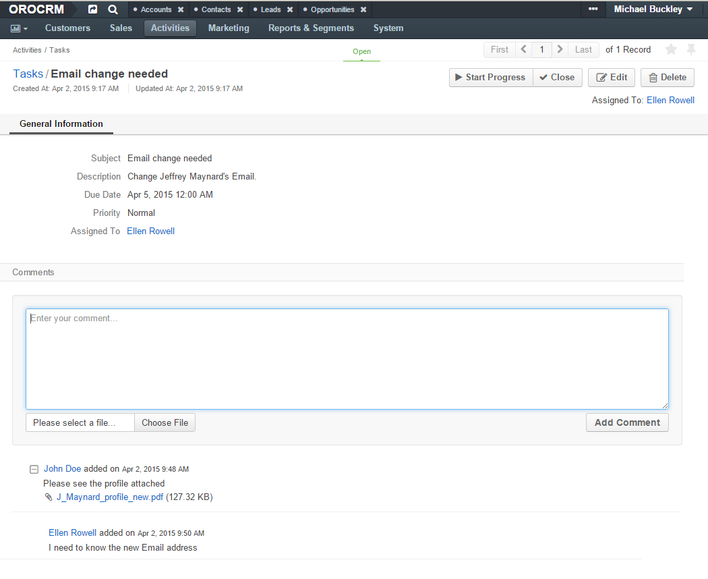

Comments¶
Interaction between users is an important part of successful work. In order to enable users to leave comments on records of an entity or on details of an activity, other than a contact request (e.g. leave some additional details of task, comment on an email sent or a call made, etc.) use the Add Comment action.
Important
By default, the list of activities available for each entity is determined by what is most commonly used by businesses. However, if your company’s work process requires it, you can always turn the desirable activity on for almost any entity (except technical ones). If you need particular activities to be enabled for an entity, contact your administrator.
Create and View Comments¶
Once a record or an activity have been created, a comment can be added to it from:
- Record view page.
- Record edit page.
- View page of a record the activity is related to.
Caution
The ability to view and write comments depends on the permissions and role settings defined in the system for the Comment entity.
On these pages, the user should:
- Click the Add Comment button.
- Enter the comment into the the text-box.
- Click the Choose File button to add a file to the comments.
- Click the Add Comment button to save the comment.
Hint
You can edit the Comment entity and add new fields, if required.
For example, Ellen Rowel was a task “Email change needed”, which required her to change the email address of Mr. Jeffrey Maynard.
- First, Ellen Rowel opened the My Tasks grid.
- Then she went to the view page page of the task and left a comment.

- John Doe opened the task details on the View page of Jeffrey Maynard’s contact record.

- Then he left a comment and attached Maynard’s profile to it.
Michael Buckley from the Marketing department opened the Tasks grid and opened the task View page. He can see both comments made by Ellen Rowel and John Doe.

Case Comments¶
Case comments work in a similar manner, except there is an additional Make Public check box. You can use it to define if the comment must be public on Zendesk.